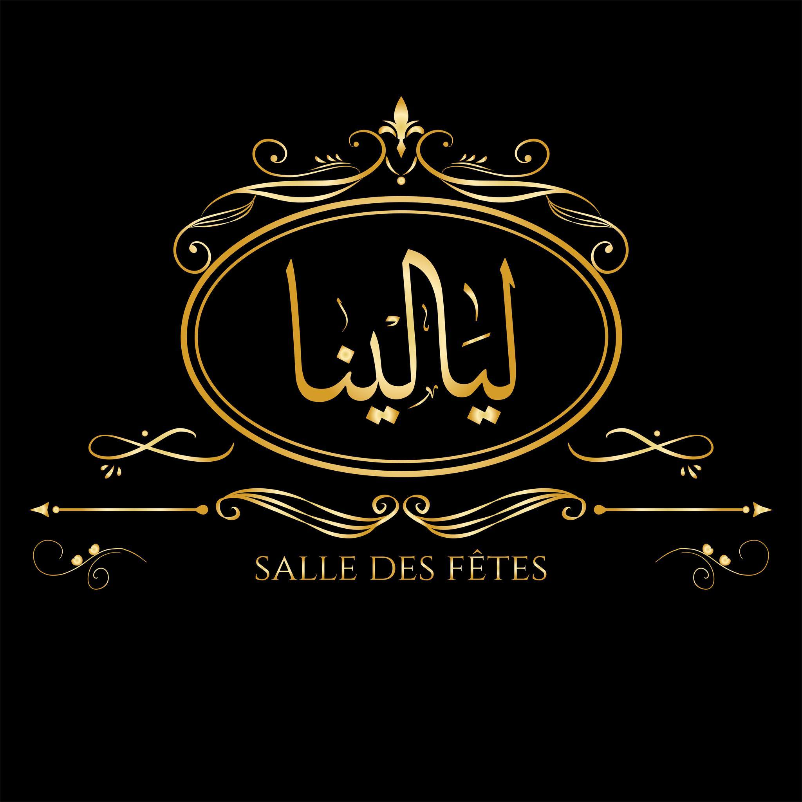
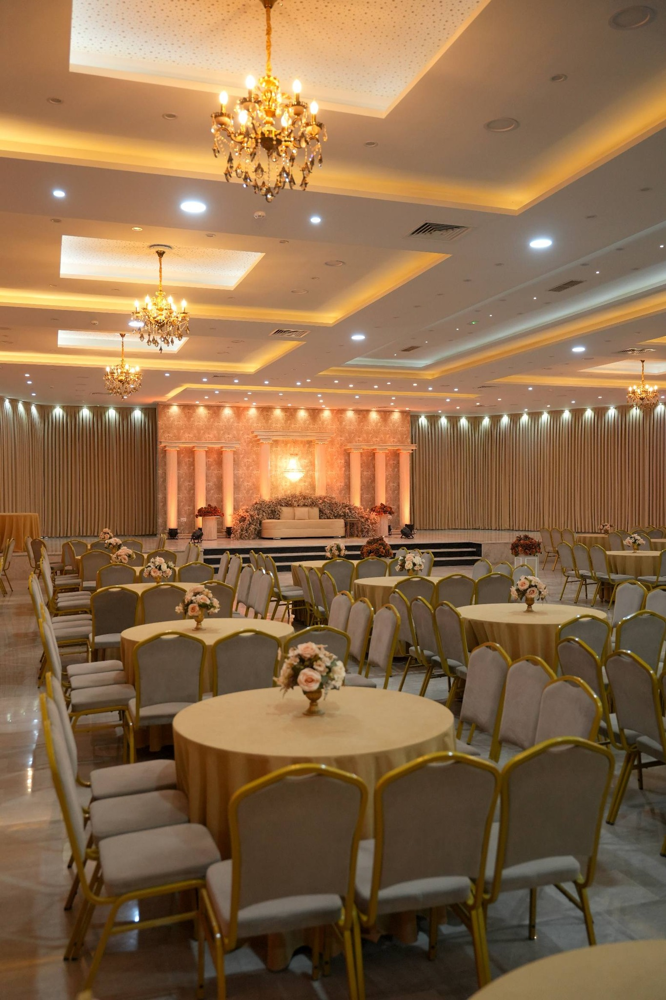
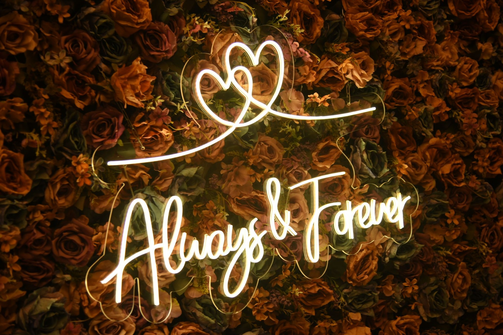
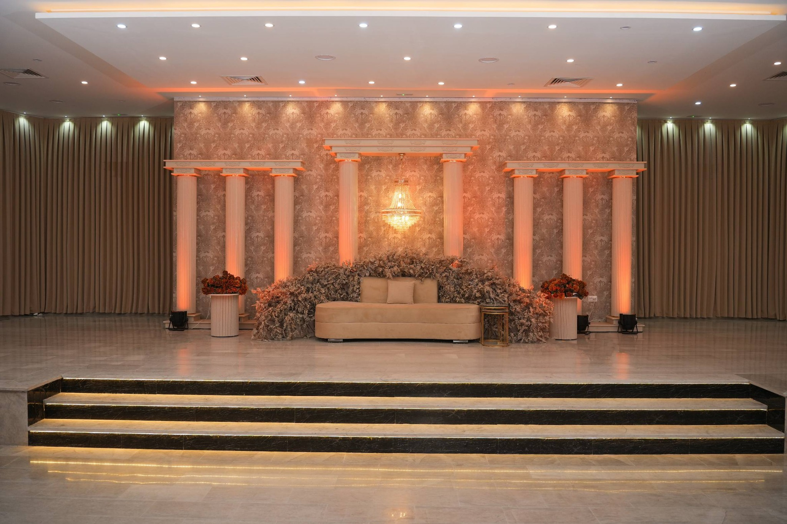
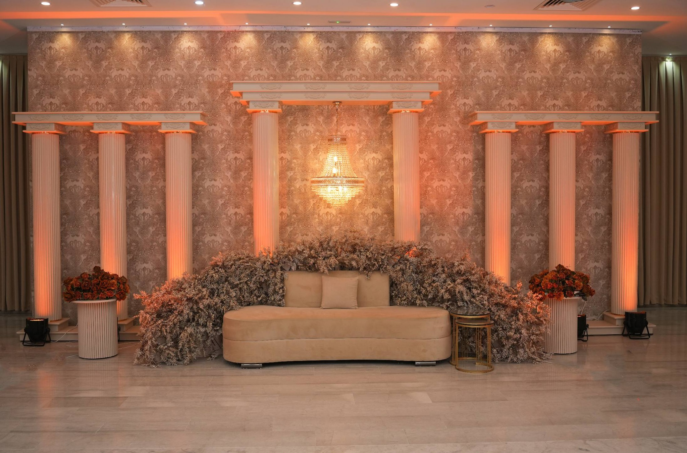
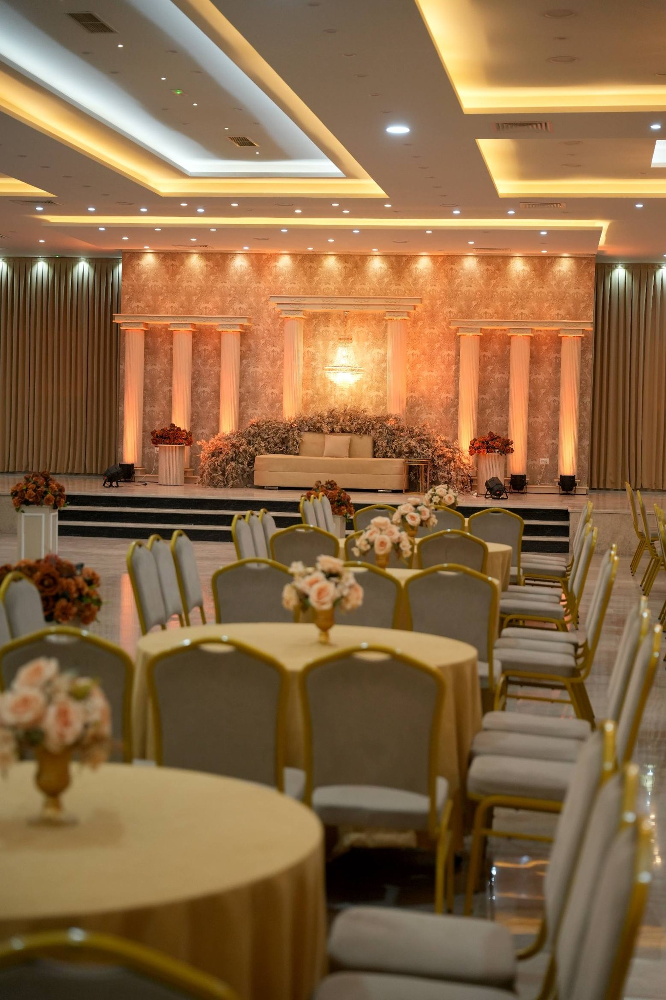
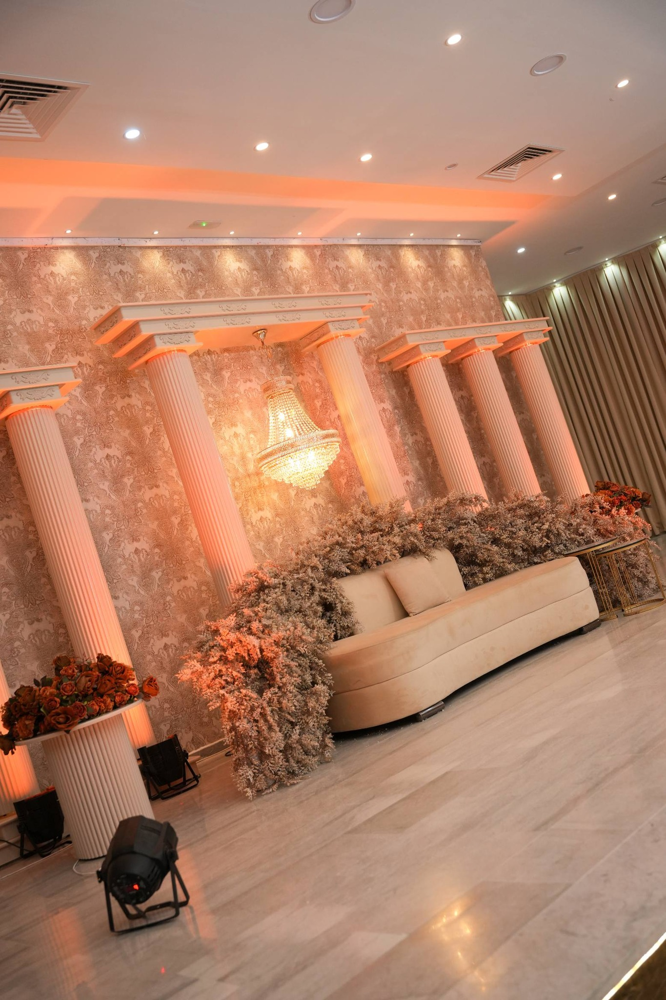
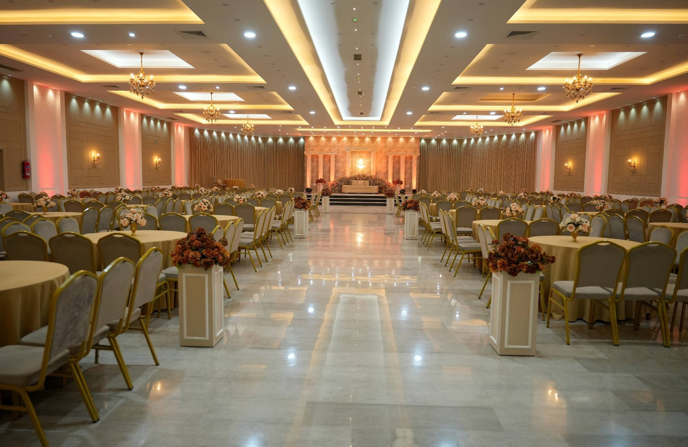

Mariages
Cérémonies traditionnelles et soirées dansantes, jusqu'à 600 invités. Décor floral, scène, pistes son et lumière.

Jebeniana · Tunisie · Depuis toujours
Une nuit ne s'oublie pas. Elle se compose — d'or chaud, de musique, de regards retenus et de pas de danse. Layelina est l'écrin de vos plus belles soirées.
Notre histoire
Layelina — de l'arabe nos nuits — est une salle des fêtes située au cœur de Jebeniana, à quelques minutes de Sfax. Nous accueillons mariages, fiançailles, henné, anniversaires et célébrations privées dans un décor pensé pour la lumière, la musique et la mémoire.
Architecture spacieuse, scène, piste de danse, espace traiteur, jardin extérieur pour les cérémonies — tout est réuni pour que vos invités n'aient à se soucier de rien d'autre que de la fête.



Ce que nous accueillons
Cérémonies traditionnelles et soirées dansantes, jusqu'à 600 invités. Décor floral, scène, pistes son et lumière.
Un cadre raffiné pour les rituels intimes — henné, sadâq, soirées familiales — avec espace privé et service dédié.
Anniversaires d'enfants, de couples ou anniversaires marquants — un lieu qui s'adapte à votre tonalité.
Réceptions d'entreprise, dîners, célébrations religieuses ou réunions familiales élargies.
Galerie




Plus de photos sur notre page Facebook officielle.
« Une salle magnifique, un personnel attentionné, une nuit dont nos familles parlent encore. Layelina a tenu chaque promesse. »
— Famille mariée à Layelina
Où nous trouver
Salle des fêtes Layelina — facilement accessible depuis Sfax, Mahdia et la route nationale. Parking sur place pour vos invités.
Contact
Les plus belles dates partent vite. Écrivez-nous pour vérifier la disponibilité, visiter la salle, ou recevoir un devis personnalisé.